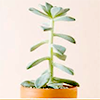
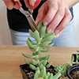
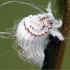
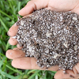
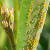

Términos que podrían resultarte útiles
-

14 comentarios
Etiolación
Cambio de forma (se alargan más de lo normal y la distancia entre una hoja y otra se incrementa) que ocurre en las suculentas cuando no reciben la suficiente luz solar (necesaria para producir su propio alimento)
-

4 comentarios
Decapitación
Corte que realizamos en nuestra planta suculenta. Algunos casos: Etiolación, plaga, pudrición de raíz y/o parte del tallo, reproducción.
-

Sin comentarios
Cochinilla Algodonosa
Insecto chupador perteneciente a los áfidos (plaga) que se alimenta de la savia de las suculentas. Al dejar herida en la planta genera a demás problema de hongos, si no se actúa a tiempo puede ser fatal para nuestra suculenta.
-

5 comentarios
Drenaje
Sabemos que las suculentas en su ambiente natural nacen en lugares con poca humedad y guardan reservas en sus hojas y/o tallos. Realizar un sustrato drenante indica que no conserva humedad tanto tiempo, que permite que si hay exceso de riego salga por los orificios de la parte inferior (agujeros de drenaje) sin ser retenido y evitar así la pudrición de nuestra planta.
-
 14 comentarios
14 comentariosRaíces Aéreas
Aparecen «pelitos» a lo largo del tallo, estas son raíces aéreas. Son múltiples las causas: la planta requiere cambio de maceta porque ya está pequeña la actual, la raíz principal está enferma y no está absorbiendo los nutrientes necesarios (nemátodos y otras plagas o pudrición), falta de riego (raíz en sequía), ha tenido cambios y se alargó más de lo debido por etiolación, porque están saliendo hijuelos en el tallo.
-

1 comentario
Pulgones
nsecto chupador (plaga) que se alimenta de la savia de las suculentas. Al dejar herida en la planta genera a demás problema de hongos, si no se actúa a tiempo puede ser fatal para nuestra suculenta.